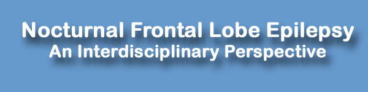
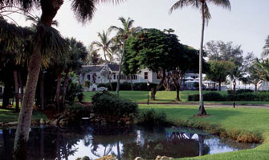

|
 |
home | help | email |
Sanibel
Symposium
Casa Ybel Resort
2255 W Gulf Dr
Sanibel Island
Florida US
1-800-276-4753
| program
|
 |
|
Day 1: Thursday February 11, 2010 Introductory Remarks
08:30-08:40
I. NFLE: Electroclinical, molecular and genetic aspects, macro and microscopic phenomenology Gross and microscopic
anatomy of the frontal lobe: Functional implications (08:40-09:40) Familial and sporadic
NFLE: Electro-clinical features (09:40-10:40) Break 10:40-11:00 Nocturnal frontal lobe
epilepsy: Is it frontal in origin? (11:00-noon) Lunch (noon-13:00) Familial nocturnal
frontal lobe epilepsy: Genetic and molecular aspects (13:00-14:00)
II. NFLE: Mechanisms Ion channels and
epilepsy (14:00-15:00) Break 15:00-15:15 Nicotinic receptors in
circuit excitability and epilepsy (15:15-16:15) NFLE: Excessive
inhibition? (16:15-17:15)
Day 2: Friday, February 12, 2010
The human circadian
rhythm (07:30-08:30) How to assess circadian
rhythm in humans: A review of literature (08:30-09:30) Circadian rhythms:
Interactions with seizures and epilepsy (09:30-10:30) Break (10:30-10:50) NFLE as a paradigm for epilepsy as dynamical disease (10:50-11:50) Seizure prediction and
the circadian rhythm (11:50-12:50) Circadian Regulation of
Neural Excitability in Temporal Lobe Epilepsy (12:50-13:05) NFLE: A
window/route to prediction and development of a data base
(13:05-13:50)
IV. Future research directions in NFLE Future research
directions (13:50-15:00, working lunch)
Copyright 2009 - Sanibel Symposium - All Rights Reserved |
|